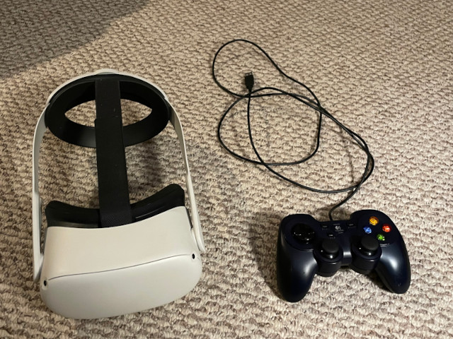

Virtual Reality (VR) Support
Skyscraper has experimental virtual reality
support, that has been tested on a Meta Quest 2 headset.
Since only graphics are supported and not the controllers that
come with the headset, third-party game controllers are
recommended. The following photo shows the Quest 2 headset
I've used for simulator development and it's controller.

To enable virtual reality support, open up the skyscraper.ini file
in a text editor, and change the line that reads
"Skyscraper.Frontend.VR = false" to true:
|
;enable or disable VR mode
Skyscraper.Frontend.VR = true
|
Once that is changed, you'll need to make sure DirectX 11 support
is enabled. To do that, delete the ogre.cfg file in
Skyscraper's folder, and choose DirectX 11 when launching
Skyscraper. Connect your game controller and optionally your
headset, and launch Skyscraper. If you don't plug in your
headset beforehand, it'll report about a headset not being found.
Both link cables and airlink are supported. Connect your
headset, and if things are working properly, you'll see the
building selection menu. You might need to enable the link
support from the headset.
The building I normally choose is the City Demo. It should
take a minute to load, once it's loaded, you should see Skyscraper
in full immersive VR.
Currently, to control things such as elevators, you'll need to use
the control panel windows. Things such as movement, jumping,
opening doors, and running can be done with the controller.
Other things such as turning off collisions (v key) can be done
via the keyboard.